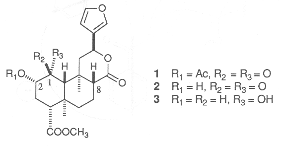
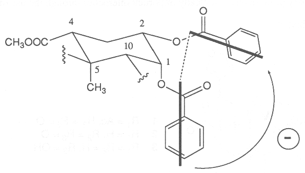
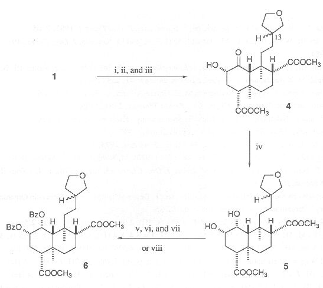

The Absolute Stereochemistry of Salvinorins
Masato KOREEDA,* Lindsey BROWN, and Leander J. VALDÉS III
Department of Chemistry, The University of Michigan, Ann Arbor Michigan 48109, U.S.A.
HTML by Arachnophilia
Chemistry Letters, pp. 2015-2018, 1990.
The absolute stereostructures of the hallucinogenic diterpenes Salvinorin A and B have been unambiguously determined by the use of the non-empirical exciton chirality circular dichroism method on their 1a,2a-diol dibenzoate derivative.
Recent investigations1,2) of the hallucinogenic Mexican mint Salvia divinorum3) have resulted in the isolation of the pharmacologically active diterpene salvinorin (divinorin) A (1) and its desacetyl analog salvinorin B (2). Extensive 1H and 13C NMR studies on these trans-clerodanes1,2) and their derivatives,2) as well as single-crystal X-ray analysis,1,2) have led to the formulation of the structures of these compounds. The absolute chemistry of the salvinorins was postulated based on the observed negative n®p* Cotton effect of the 1-ketone around 295 nm in their circular dichroism (CD) spectra.1,2) While this assignment had appeared to be corroborated by the n®p* Cotton effect of isofruticolone,4) the ambiguous nature of the approach associated with this empirical CD method necessitated an independent, unequivocal verification of the absolute stereochemistry. In the following, we delineate the unambiguous assignment of the absolute stereochemistry of these physiologically important diterpenes through the use of the non-empirical exciton chirality CD method.5)

In an effort to obtain a salvinorin derivative possessing an a-diol system which can be transformed into the dibenzoate ester required for the exciton chirality CD method, salvinorin A (1) or B (2) was treated with sodium borohydride in various protic solvents. The products having the 1a,2a-diol group were obtained in high yield. However, this reduction was accompanied by extensive isomerization at C-8. While mechanistic details for this unexpected observation remain to be established at this time, the isomerization at C-8 appears to be the result of the base-promoted clevage of the C-8/9 bond under the reaction conditions followed by the reclosure to provide the 8-epimer prior to the reduction of the 1-ketone. Furthermore, attempts to obtain the 1,2-dibenzoate derivative of the major reduction product 3 under various benzoylating conditions invariably produced only the 2-monobenzoate.
Since it was deemed desirable to remove possible interaction between the benzoate and the furan chromophores for the unambiguous CD analysis, salvinorin A (1) was reduced under cataytic hydrogenation conditions, providing the hexahydro derivative 4 (a 2:1 epimeric mixture at C-13) after esterification with diazomethane and desacetylation with KCN/MeOH.6) Interestingly, ester 4 was found to be relatively stable towards configurational isomerization at C-8. Thus, reduction of 4 with NaBH4 in EtOH produced cleanly the cis-1a,2a-diol 5 in 81% yield. The benzoylation of the 1-a-hydroxyl group in 5, which is surrounded by the two 1,3-diaxially juxtaposed methyl groups, proved to be quite difficult under the standard benzoylation conditions. However, treatment of 5 with trimethyl orthobenzoate at 100°C in the presence of a catalytic amount of benzoic acid followed by acid-catalysed hydrolysis of the resulting 1,2-cyclic orthobenzoate provided the 1-monobenzoate derivative of 5.7,8) Benzoylation of this monobenzoate under standard conditions afforded the desired 1,2-dibenzoate 69) in 95% yield. Alternatively, treatment of diol 5 with benzoyl triflouromethanesulfonate (BzOTf)10) resulted in the direct formation of 6 in 50%yield.

Fig. 1. The negative chirality between the two benzoate electric transition dipoles of the 1,2-dibenzoate derivative 6.

Scheme 1. Reagents and conditions: i, H2, 5% Pd/C/MeOH, 14 h; ii, CH2N2/MeOH, 0°C, 2 h; iii, KCN (3.0 equiv.)/MeOH, reflux, 15 min [74% yield for 1 ® 4]; iv, NaBH4 (5.0 molar equiv.)/abs. EtOH, 0°C ® room temperature, 12 h (81%); v, PhC(OME)3 (excess), PhCOOH (catalytic), 100°C, 1 h; vi, THF/water/AcOH (15/5/1), conc. HCl (2 drops) (65% yield for v and vi); vii, BzCl (excess)/pyridine, room temperature, 2 h (95%); viii, BzOTf (5 equiv.), pyridine (7.5 equiv)/CH2Cl2, -78°C ® room temperature, 1 h at room temperature (50%).
The CD spectrum of the 1,2-dibenzoate 6 in 9:1 MeOH/dioxane showed a pair of typical exciton-split Cotton effects with opposite signs centred upon the UV absorption (227 nm) of the benzoate chromophore: De235.5 -15.9 and De221.5 +6.66. The negative longer wavelength Cotton effect clearly defines the negative chirality between the two electric transition dipoles of the benzoate chromophores assignable to the long axis p®p* transitions (Fig. 1),5) thus unequivocally assigning the absolute stereostructures of salvinorin A and B as given in 1 and 2, respectively.
The National Institutes of Health (CA 25185) are gratefully acknowledged for financial support of this work.
References
1. A. Ortega, J.F. Blount, and P. Marchand, J. Chem. Soc., Perkin Trans 1, 1982, 2505.
2. L.J. Valdés III, W.M. Butler, G.M. Hatfield, A.G. Paul, and M. Koreeda, J. Org. Chem. 49, 4716 (1984).
3. L.J. Valdés III, J.L. Díaz, and A.G. Paul, J. Ethnopharmacol., 7, 287 (1983); L.J. Valdés III, G.M. Hatfield, M. Koreeda and A.G. Paul, Economic Botany, 41, 283 (1987).
4. M. Martinez-Ripoll, J. Fayos, B. Rodriguez, M.C. Garcia-Alvarez, G. Savola, F. Piozzi, M. Paternostro and J.R. Hanson, J. Chem. Soc., Perkin Trans., I, 1981, 1186.
5. N. Harada and K. Nakanishi, "Circular Dichroic Spectroscopy - Exciton Coupling in Organic Stereochemistry," Univ. Sci. Books, Mill Valley, California, 1983.
6. K. Mori, M. Tominaga, T. Takagawa, and M. Mitsui, Synthesis, 1973, 790.
7. J.F. King and D. Allbutt, Can. J. Chem., 48, 1754 (1970); M. Koreeda, M.N. Akhtar, D.R. Boyd, J. D. Neill, D.T. Gibson, and D.M. Jerina, J. Org. Chem., 43, 1023 (1978); L.J. Valdés III and M. Koreeda, Ibid., in press.
8. For discussions on the mechanism of this reaction, see: P. Deslongchamps, "Steric Effects in Organic Chemistry," Pergamon Press, Oxford (1983), pp. 82-85.
9. 1H NMR (500 MHz, CDCl3) d 1.121 (s, 3H), 1.544 (s, 3H), 2.08-2.23 (m, 2H), 2.41-2.56 (m, 3H), 3.419 (dd, 1H, J = 7.6, 7.6 Hz), 3.445* (dd, 1H, J = 8.4, 8.4 Hz), 3.647 (s, 3H), 3.715 (s, 3H), 3.75-4.03 (m, 3H), 5.051 (ddd, 1H, J = 11.8, 4.5, 3.5 Hz), 6.024* (m, 1H), 6.047 (m, 1H; the observed W1/2 = 3.8 Hz upon irradiation of the 5.051 ppm peak), 7.259 (dd, 2H, J = 8.0, 7.6 Hz), 7.457 (tt, 1H, J = 7.6, 1.2 Hz), 7.494 (dd, 2H, J = 8.1, 7.7 Hz), 7.620 (tt, 1H, J = 7.7, 1.4 Hz), 7.756 (dd, 2H, J = 8.0, 1.2 Hz), and 8.043 ppm (dd, 2H, J = 8.1, 1.4 Hz). The peaks with asterisks indicate those of the spectroscopically resolved minor C-13 epimer.
10. M. Koreeda and L. Brown, J. Chem. Soc., Chem. Commun., 1983, 1113, L. Brown and M. Koreeda, J. Org. Chem., 49, 3875 (1984).
(Received August 6, 1990)